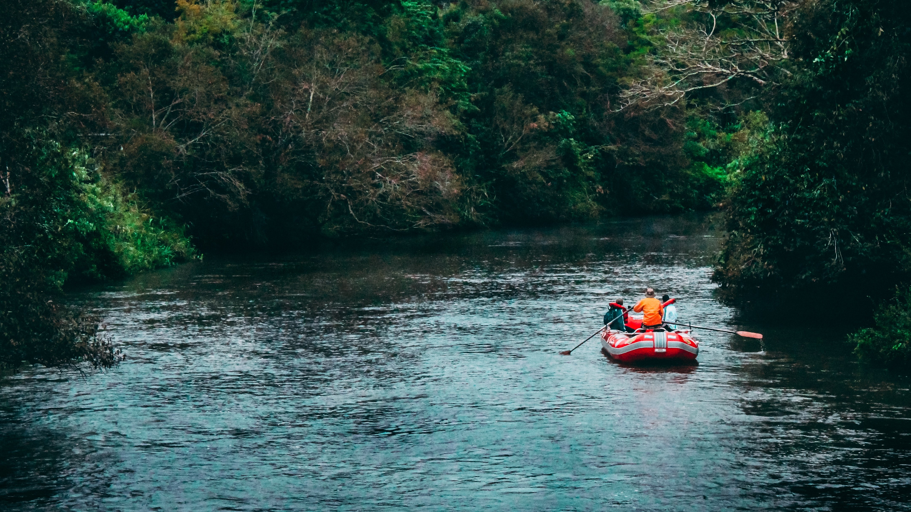

Dry Oar Rafting
Book a trip Now!
Are you ready for your next adventure? We have all the information you need to book your trip!
Our Purpose
Our purpose is to give our clients safe, thrilling, and unforgetable adventures! Our goal is to provide guides, tips, advice, and support for our clients. We want to help our clients become reliable, safe, and skilled rafters in hopes that they feel ready and prepared to take on more adventures in the future.

What We Offer
We offer many differnt packs throughout the year. We provide an instructor, equipment, maps, and tips on all of our trips. All of our instructors are skilled in first aid and are prepared to help in any kind of emergency. Our trips range from 3 hours to 48 hours. The longer trips include breaks and overnight camping. We also offer buses to transfer you and your equipment back up to main camp.